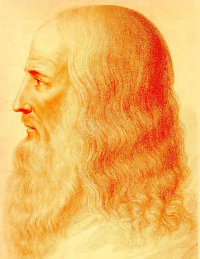

Considerado el paradigma del homo universalis, del sabio renacentista versado en todos los ámbitos del conocimiento humano, Leonardo da Vinci (1452-1519) incursionó en campos tan variados como la aerodinámica, la hidráulica, la anatomía, la botánica, la pintura, la escultura y la arquitectura, entre otros. Sus investigaciones científicas fueron, en gran medida, olvidadas y minusvaloradas por sus contemporáneos; su producción pictórica, en cambio, fue de inmediato reconocida como la de un maestro capaz de materializar el ideal de belleza en obras de turbadora sugestión y delicada poesía.
Recreación de un retrato de Leonardo
En el plano artístico, Leonardo conforma, junto con Miguel Ángel y Rafael, la tríada de los grandes maestros del Cinquecento, y, pese a la parquedad de su obra, la historia de la pintura lo cuenta entre sus mayores genios. Por los demás, es posible que de la poderosa fascinación que suscitan sus obras maestras (con La Gioconda a la cabeza) proceda aquella otra fascinación en torno a su figura que no ha cesado de crecer con los siglos, alimentada por los múltiples enigmas que envuelven su biografía, algunos de ellos triviales, como la escritura de derecha a izquierda, y otros ciertamente inquietantes, como aquellas visionarias invenciones cinco siglos adelantadas a su tiempo.
Juventud y descubrimientos técnicos
Leonardo nació en 1452 en la villa toscana de Vinci, hijo natural de una campesina, Caterina (que se casó poco después con un artesano de la región), y de Ser Piero, un rico notario florentino. Italia era entonces un mosaico de ciudades-estado como Florencia, pequeñas repúblicas como Venecia y feudos bajo el poder de los príncipes o el papa. El Imperio romano de Oriente cayó en 1453 ante los turcos y apenas sobrevivía aún, muy reducido, el Sacro Imperio Romano Germánico; era una época violenta en la que, sin embargo, el esplendor de las cortes no tenía límites.
Para leer más información sobre Leonardo da Vinci puedes dirigirte a la página web biografiasyvidas.com